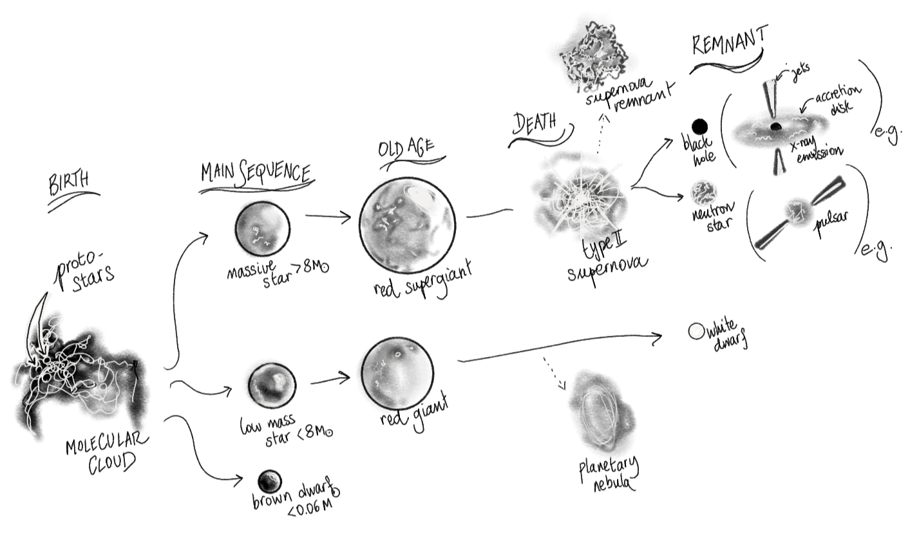

research
My current work is on modeling the composite X-ray reflection spectrum associated with supermassive black hole binaries, with a special focus on those that emit low-frequency gravitational waves detectable by either LISA (Laser Interferometry Space Antenna) or the PTAs (Pulsar Timing Arrays).
x-ray reflection spectra of supermassive black hole binaries
I use advanced relativistic reflection tool relxill within X-ray spectral analysis
software xspec to compute the full reflection spectrum, from roughly 0.1 to 100 keV,
including the much beloved Fe K$\alpha$ line at 6.4 keV.
My first paper, titled "X-ray
Reflection Signatures of Supermassive Black Hole Binaries," simulates the composite X-ray
reflection spectra expected from SMBHs of different mass ratios $q=m_2/m_1$ and total mass accretion
rates $\lambda_\textrm{tot}=\dot{M}_\textrm{tot}/\dot{M}_\textrm{tot, Edd}$
(the amount by which 1 of the BHs is bigger than the other, and the quantity of gas being consumed
by the binary, relative to the total binary mass — this translates to luminosity).

We then simulated 100 ks observations of those very spectra, in either PTA or LISA mass ranges, with 4 well-studied X-ray mission concepts (NewAthena, AXIS, STROBE-X, and HEX-P) to see which ones could pick up on the binarity of our synthetic sources.

Before graduate school, I worked with Pr. Shane Larson at CIERA (Northwestern University)
milky way compact binaries in the lisa frequency band
Before grad school, I worked a year (2019-2020) with Prof. Shane Larson at Northwestern's CIERA. there, I used Katie Breivik's compact stellar binary population synthesis code cosmic to characterize the non-resolvable background noise from galactic compact binaries and its impact on LISA's sensitivity curve.

I was also a summer student in 2019 at CERN's Beams and Accelerator Physics department, working with Dr. Gianni Iadarola.
beam luminosity loss in the large hadron collider
I ran particle tracking simulations on their high performance computing cluster to study the evolution of beam luminosity loss in the Large Hadron Collider (LHC) in the presence of complex non-linear beam-beam effects

We had to develop a mathematical formalism to quantify the losses while minimizing systematic errors.
back